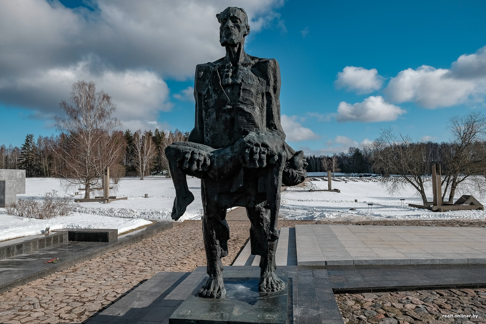
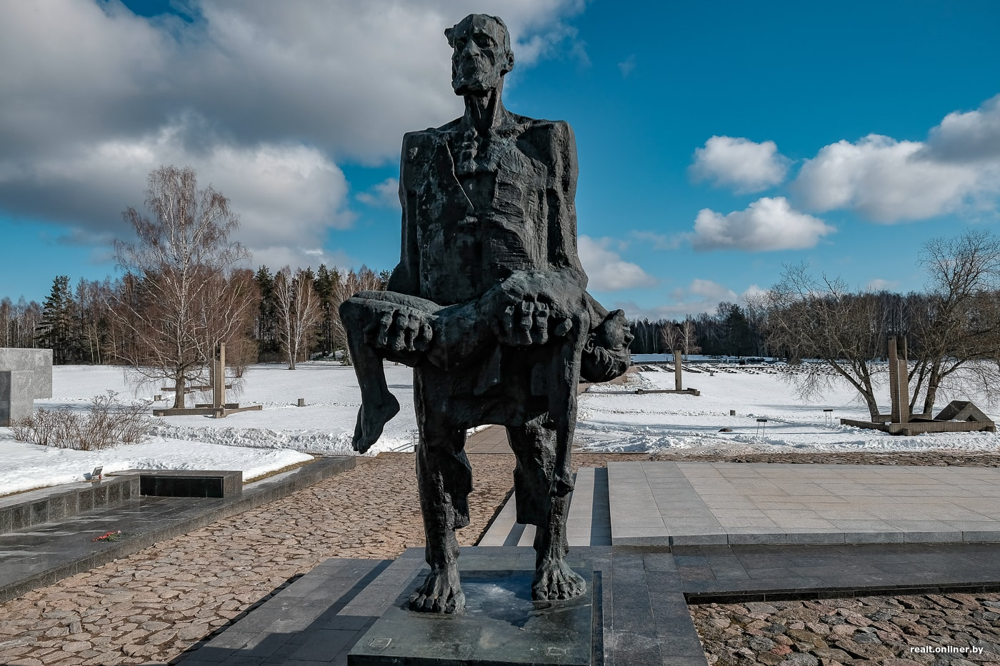

Не́свижский за́мок — дворцово-замковый комплекс, находящийся в северо-восточной части города Несвижа.
Ми́рский за́мок — оборонительное укрепление и резиденция в городском посёлке Мир.
Хаты́нь — деревня в Белоруссии, уничтоженная 22 марта 1943 года карательным отрядом.
 
